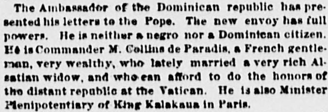
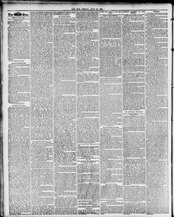

See the full pageVer la página completaEmperor of llrnxll This prelate ha been for veveral l yearsEmperador de Brasil Este prelado ha estado durante varios años
The Ambassador of the Dominican Republic has presented his bull to the Pope. The new envoy, Commander M. Collin de Paradis, is a French gentleman and neither a negro nor a Dominican citizen. He also serves as Minister Plenipotentiary of King Kalakaua.El embajador de la República Dominicana presentó sus credenciales ante el Papa. El flamante enviado, comendador M. Collin de Paradis, es un caballero francés que no es de raza negra ni posee la ciudadanía dominicana. Se desempeña asimismo como ministro plenipotenciario del rey Kalakaua.
FULL TEXT:TRADUCCIÓN:
Various Intelligence from Rome.Noticias varias desde Roma.
ROME, July 10.—His Holiness has received Mr. J. C. Nevaz, Bishop of San Antonio, Texas.ROMA, 10 de julio.—Su Santidad ha recibido al Sr. J. C. Nevaz, Obispo de San Antonio, Texas.
Leo XIII. has sent to the Grand Vizier the decoration of the Grand Cross of Pius IX. for Ghalib Pasha, Governor of Salonica. The cross was presented to the Grand Vizier by Monsignor Rotelli, the apostolic delegate at Constantinople. Monsignor Rotelli conveyed the Pope's thankfulness to the Governor for the protection granted to the Catholics of Salonica.León XIII ha enviado al Gran Visir la condecoración de la Gran Cruz de Pío IX para Ghalib Pasha, Gobernador de Salónica. La cruz fue presentada al Gran Visir por Monseñor Rotelli, el delegado apostólico en Constantinopla. Monseñor Rotelli transmitió el agradecimiento del Papa al Gobernador por la protección otorgada a los Católicos de Salónica.
Leo XIII. has sent Monsignor Buti, Professor of Electricity in the Papal schools of Palazzo Altemps, to Vienna, to visit the great electrical exhibition. His Holiness will pay the expenses of the journey, and pay for the publication of a volume in which Monsignor Buti will give an account of his visit to the exhibition.León XIII ha enviado a Monseñor Buti, Profesor de Electricidad en las escuelas Papales del Palazzo Altemps, a Viena, para visitar la gran exposición eléctrica. Su Santidad pagará los gastos del viaje, y pagará por la publicación de un volumen en el que Monseñor Buti dará cuenta de su visita a la exposición.
Monsignor Mocenni, Archbishop of Heliopolis and Under Secretary of State, has received the decoration of Grand Cross of the Order of Christ from Dom Pedro, Emperor of Brazil. This prelate has been for several years Nuncio in Brazil, where he went as successor of Monsignor Roncetti; the prelate who brought to Cardinal McCloskey his beretta, and who died while Nuncio at Munich.Monseñor Mocenni, Arzobispo de Heliópolis y Subsecretario de Estado, ha recibido la condecoración de Gran Cruz de la Orden de Cristo de Dom Pedro, Emperador del Brasil. Este prelado ha sido por varios años Nuncio en el Brasil, adonde fue como sucesor de Monseñor Roncetti; el prelado que trajo al Cardenal McCloskey su birreta, y que murió mientras era Nuncio en Múnich.
The Ambassador of the Dominican republic has presented his letters to the Pope. The new envoy has full powers. He is neither a negro nor a Dominican citizen. He is Commander M. Collins de Paradis, a French gentleman, very wealthy, who lately married a very rich Alsatian widow, and who can afford to do the honors of the distant republic at the Vatican. He is also Minister Plenipotentiary of King Kalakaua in Paris.El Embajador de la república dominicana ha presentado sus cartas al Papa. El nuevo enviado tiene plenos poderes. No es ni negro ni ciudadano dominicano. Es el Comendador M. Collins de Paradis, un caballero francés, muy rico, que últimamente se casó con una viuda alsaciana muy rica, y que puede permitirse hacer los honores de la distante república en el Vaticano. Es también Ministro Plenipotenciario del Rey Kalakaua en París.
Cardinal Howard will remain absent from Rome until the month of November. He is visiting friends in England and Scotland.El Cardenal Howard permanecerá ausente de Roma hasta el mes de noviembre. Está visitando amigos en Inglaterra y Escocia.
The Sun. New York, July 27, 1883. Page 2.